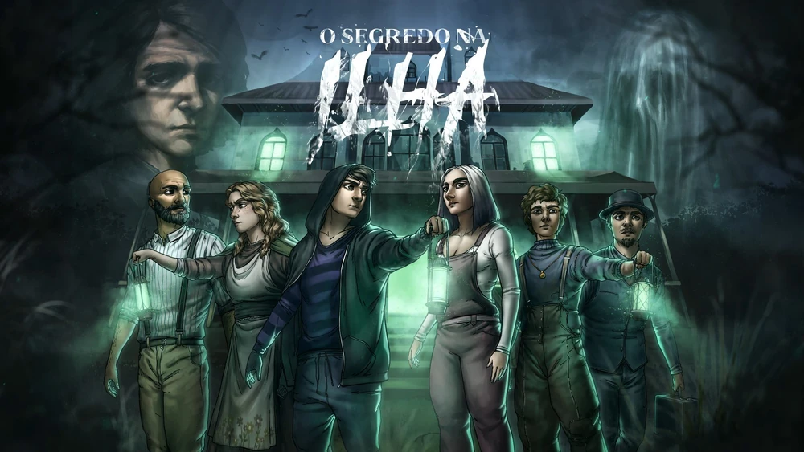
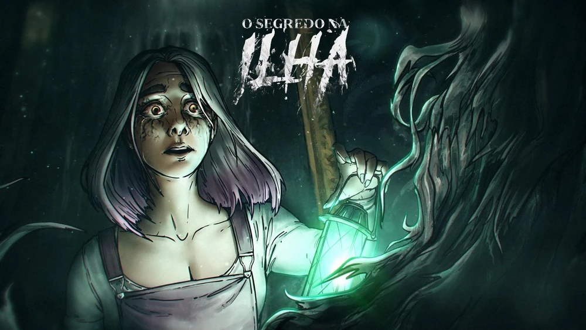
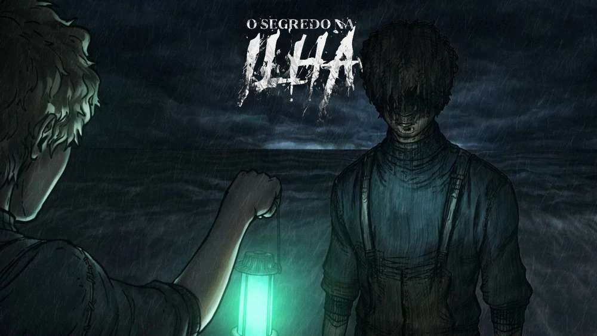
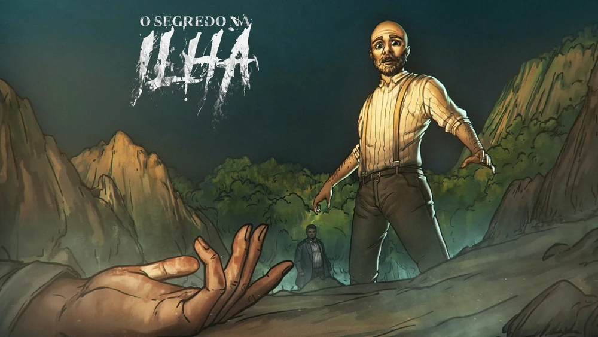
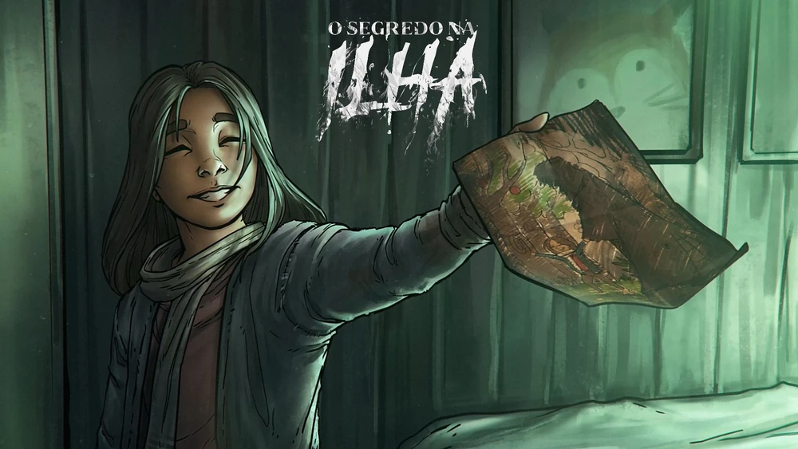
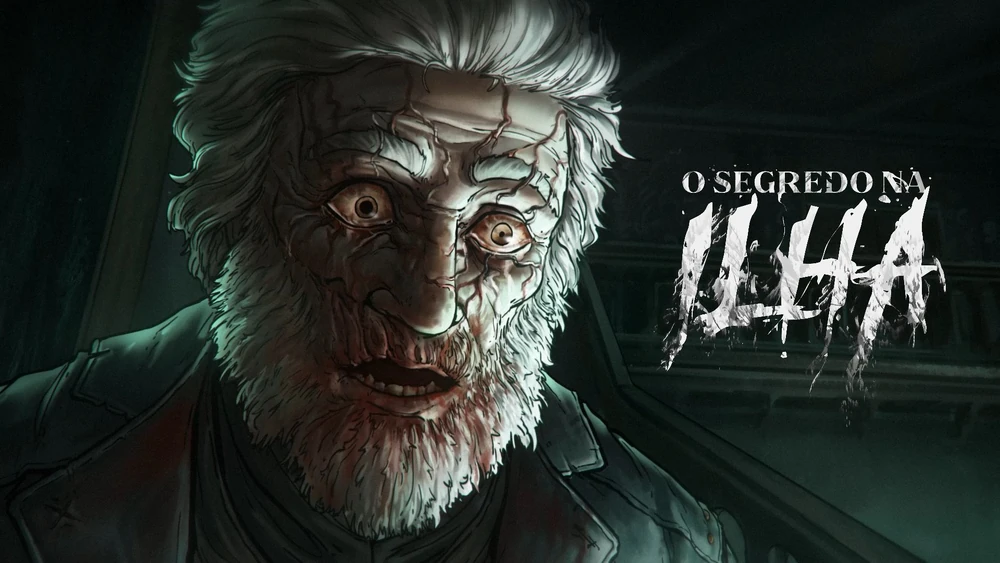
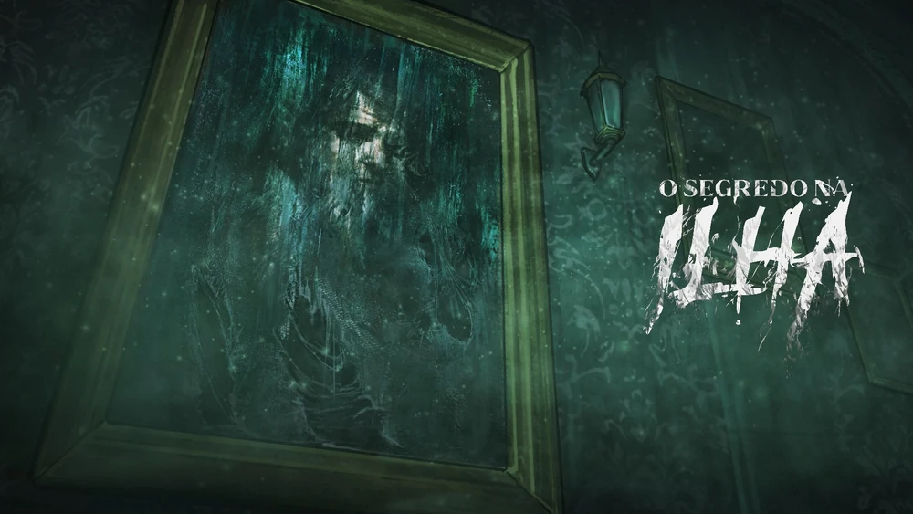
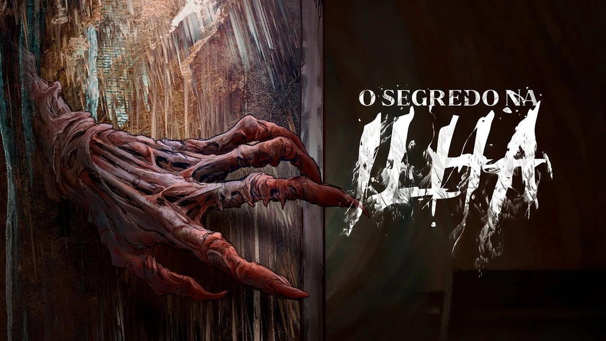

O Segredo na Ilha é a primeira campanha spin-off da série Ordem Paranormal. É uma campanha de RPG de mesa baseada no Sistema de Ordem Paranormal. Mestrada pelo streamer, diretor criativo e roteirista de Enigma do Medo, Cellbit, é protagonizada por Amelie Florence, Bárbara Lima, Milo Castello, Olivier Florence e Wanderley Nascimento de Jesus Maria.
A campanha foi anunciada no dia 18 de junho de 2022 durante um evento especial na Twitch do Cellbit, como um dos quatro segredos que foram revelados. O Segredo na Ilha foi uma das três campanhas spin-offs anunciadas, tendo história e personagens diferentes da história principal de Ordem Paranormal. Como diferencial, nessa campanha, cada episódio equivaleu a um dia inteiro na história.
A temporada teve um total de 8 episódios, transmitidos às 18 horas de todo sábado na Twitch do Cellbit. Como diferencial, todos os episódios foram disponibilizados no canal oficial de Ordem Paranormal no YouTube.
Em uma ilha isolada, há uma enorme mansão, construída por um pintor que desapareceu misteriosamente há mais de 20 anos. Um avaliador de artes é contratado para passar alguns dias dentro dessa mansão, à procura de pinturas valiosas dentro dela. Para isso, ele decide levar a sua família na viagem. Afinal, o que poderia dar de errado?
A ilha de Tipora recebe uma família liderada pelo pai, um avaliador de artes que segue em direção à mansão de um famoso pintor que desapareceu há muito tempo atrás sem deixar rastros. Vários segredos e mistérios esperam essa família dentro da mansão que permaneceu fechada por tantos anos.
Os Florence decidem aproveitar o dia para relaxar um pouco na praia de Tipora. Mas um incidente selvagem, uma confraternização do vilarejo e um segredo guardado por toda a ilha prometem fazer o dia ficar de cabeça para baixo.
Amelie, Bárbara, Milo e Olivier se reúnem novamente para continuar investigando a história da Mansão dos Moretti. Porém, a chegada do novo agente imobiliário, o desaparecimento de Amora e um evento trágico na praia podem apavorá-los até o fim de suas vidas.
Pesadelos atormentadores, revelações chocantes durante um comício e mais investigações do caso de Constantino e Noralma deixam Amelie, Bárbara, Milo, Olivier e Wanderley curiosos com os segredos de todos da ilha.
O sino está cada vez mais alto. Amelie, Bárbara, Milo, Olivier e Wanderley se juntam para descobrir mais sobre os mistérios que rondam a Mansão dos Moretti. Porém, animais paranormais, um quadro revelador e muito sangue derramado os farão questionar suas próprias emoções e o que fazer a partir de agora.
Todo mundo irá morrer amanhã. Amelie, Bárbara, Milo, Olivier e Wanderley correm contra o tempo para desvendar os mistérios restantes da Mansão dos Moretti e da ilha antes que a criatura misteriosa dos quadros consuma tudo e todos.
Após um treino intensivo, Amelie, Bárbara, Milo, Olivier e Wanderley se preparam para desvendar o que se esconde no Terceiro Andar. E a resposta para tudo que acontece nessa ilha os lembra novamente que a verdadeira arte é só um reflexo dos sentimentos - ou a falta deles - de quem a contempla.
A criatura é real. A ilha de Tipora aprecia a verdadeira arte de Barnabé enquanto Amelie, Bárbara, Milo, Olivier e Wanderley usam suas últimas forças para poder combatê-la. Porém, um último segredo dessa ilha precisa ser investigado.
